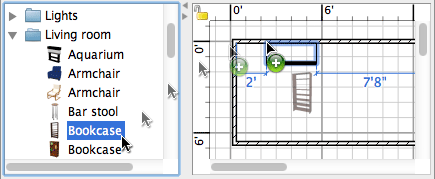

| Legg til dører, vinduer og møbler | |||
For å legge til dører, vinduer eller møbler til hjemmet ditt, drar og slipper du dem én etter én fra katalogen til hjem-planen eller møbellisten.  Du kan også velge et eller flere møbler i katalogen, og så velge Møbler > Legg til hjem eller klikke på Legg til hjem verktøyet.
Når møbles slippes i møbellisten eller legges til med Møbler > Legg til hjem menyvalget, vil plasseringen
av deres øverste venstre hjørne være i punktet (0, 0). Møblene som legges til blir valgt, og tegnes samtidig i møbellisten, i planen og i 3D visningen. Mens 3D modellen av de nye møblene lastes vises disse som hvite bokser i 3D visningen. |
|